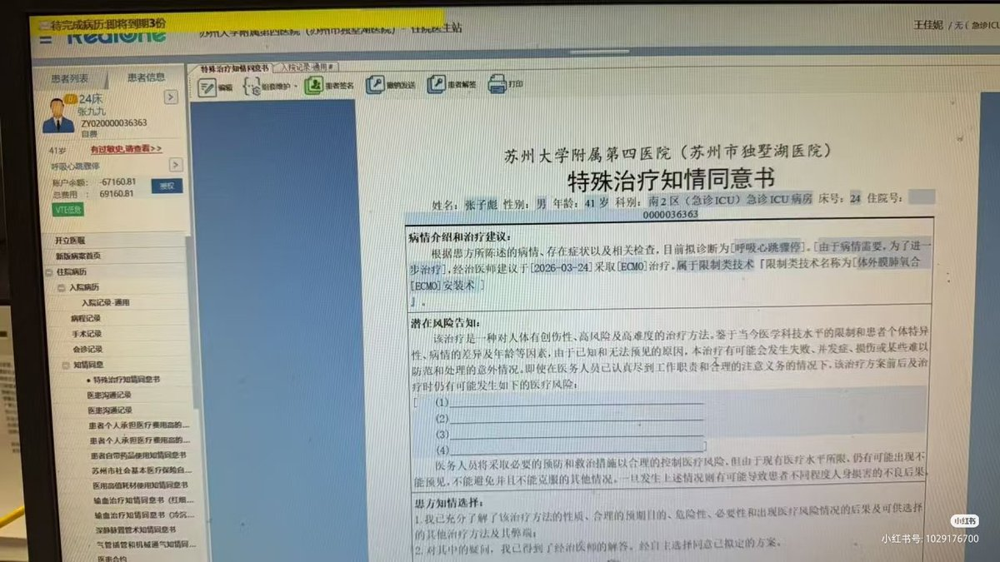
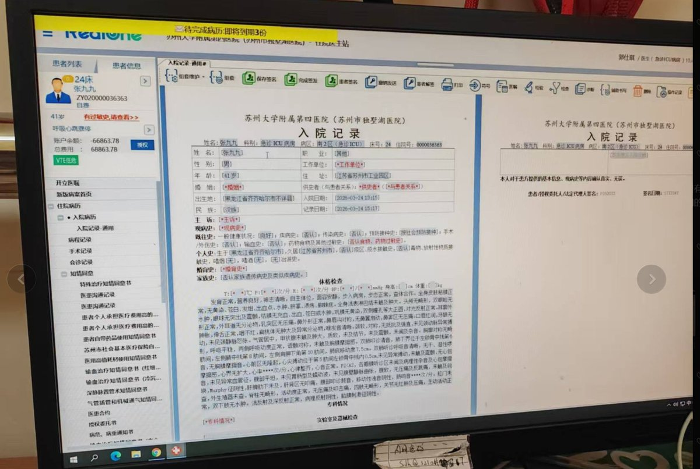

雪秋小可爱🍥
@XUEQIUxka
@laozhouhengmei 感觉人应该没了，不过还是 R.I.P.


老周横眉
@laozhouhengmei
张雪峰目前情况有点扑朔迷离。
第一：很多人都在说，他的抖音头像变黑白了。 确实曾经变黑白了，但是现在又变回有颜色了。这是我自己亲自查看的。
第二：网上在传的一份《入院记录》截屏，但我仔细看了姓名那一列，有些截屏里是“张子彪”（张雪峰真名），但有些却是“张九九”。所以我觉得这是假的。 https://t.co/DPFrb1Qkv7